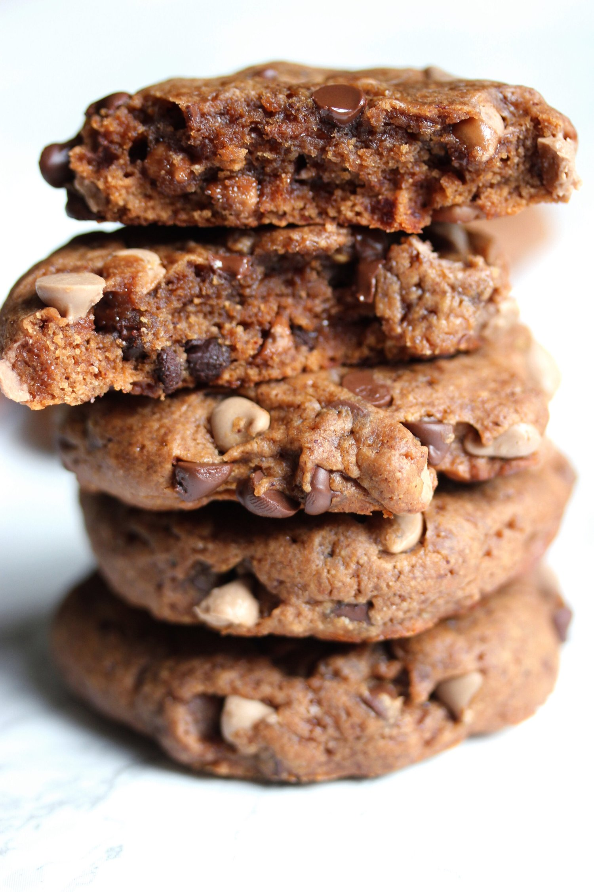
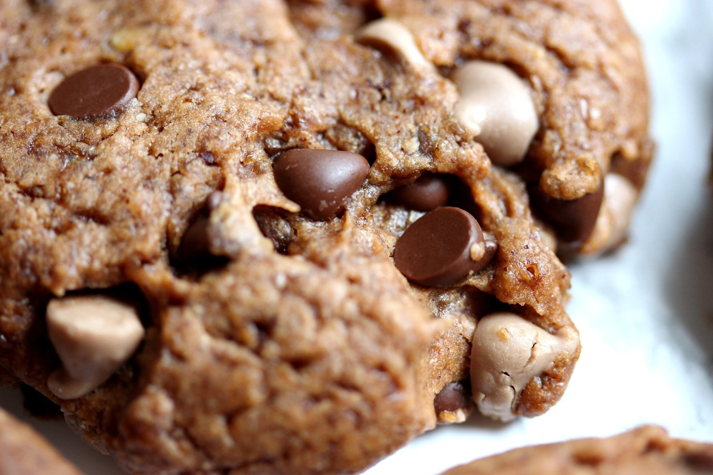
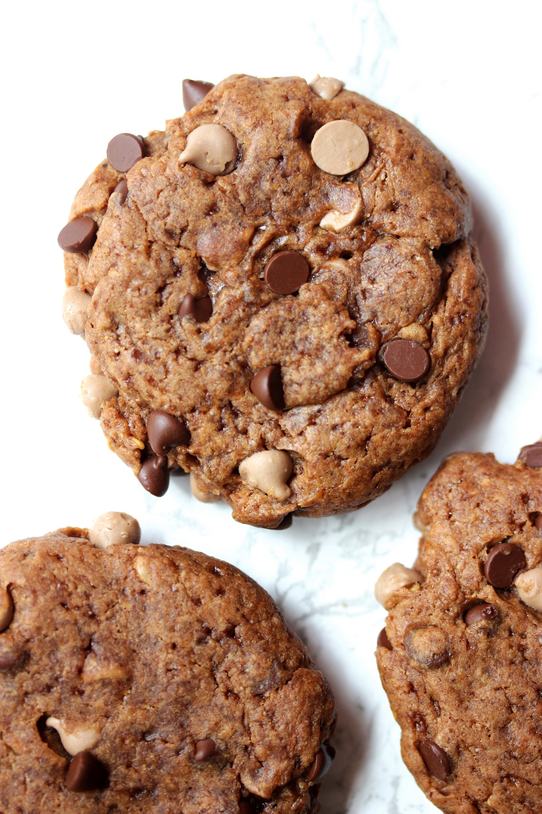
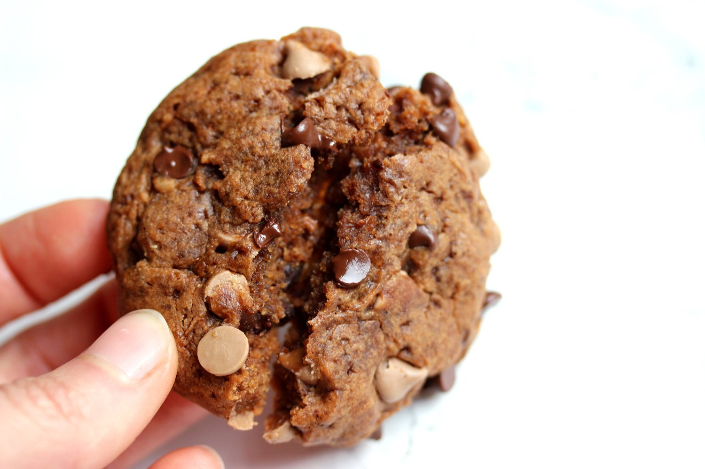

Caramel Chip Chocolate Hazelnut Cookies (vegan)





These thick and chewy caramel chip chocolate hazelnut cookies will melt your heart with its melty chips! These soft, rich cookies are made with wholesome ingredients, and the recipe is fully vegan, refined sugar free, and can be made gluten free!
These cookies...mannnnn these cookies. You know when you're expecting something good? And then something EVEN BETTER HAPPENS and your senses are just overloaded and you think you may just pass out with joy? I had that moment. For a few moments. These cookies are thick, chewy, chocolatey, creamy.... The texture is just fantastic. I am obsessed with little chips of caramel and chocolate throughout! Not only that, but the base flavor is so delightful and rich from the Naturally More chocolate hazelnut spread, the main cookie ingredient.
This chocolate hazelnut spread is so unique. At first you think, nutella? But no. This tastes very natural, not like sugar overload or chemical additives. This spread has 80% less sugar than leading brands, and it is high in omega-3 ALA from added flax seeds. If you think Nutella tastes way too sweet or fake, then this is the chocolatey spread that you need. It is rich and cocoa-nutty, but not a punch of sugar smack dab in the middle of your face. It has just a hint of salt which is perfect with the dark chocolate and nut flavors.
This sweet, decadent chocolate spread is all natural, GMO free, gluten free, vegan, palm oil free, and contains no trans fats. If I didn't have it right in front of me to prove it, I'd think this stuff was too good to be true. Not only that, but this nut butter has added probiotics too!! Whaaaattt??? So cool; I've never seen that in a nut butter spread before! Probiotics are great for our digestion, they support the immune system, and they are 10 times more effective than common yogurt cultures. So you're telling me I can eat these cookies....be vegan....and make my gut happy at the same time? Okay yes please and THANK YOUUU.I tested these cookies on my coworkers, and they highly highly approve. These cookies are - and I quote - "top notch cookies." Although these caramel chip chocolate hazelnut cookies contain no butter, oil, or refined sugar, they loved the taste and felt it was sweet and satisfying. Just goes to show that cookies can be made with wholesome, healthy ingredients and still be decadent!
My favorite part of a cookie is testing the "break" of it. The center break is the truest, oldest test of cookie time. These cookies pass with flying colors. They are thick, chewy, rich, and creamy. They can do no wrong. These cookies are the type of cookies to show they care by showing up with a bundle of lavender because they know it reminds you of your elderly grandmother. Or wrap around to open the car door for you even when it's pouring down rain and lightning. Chivalrous cookies.
Give this recipe a go and let me know what you think! These soft, rich cookies are made with wholesome ingredients, and the recipe is fully vegan, refined sugar free, and can be made gluten free!
Have you tried this nifty Naturally More chocolate hazelnut spread with added probiotics? What way should I use it next?
Caramel Chip Chocolate Hazelnut Cookies
Makes: 16 cookies
-
1 cup + 2 TBSP all-purpose flour*
-
1/2 cup coconut sugar
-
1 tsp cornstarch
-
1/2 tsp baking powder
-
1/2 tsp vanilla extract
-
1/2 cup Naturally More chocolate hazelnut spread
-
1/4 cup almond milk (or water)
-
1/3 cup vegan caramel chips
-
1/3 cup vegan chocolate chips
Preheat the oven to 375 F. In a medium bowl, combine all of the dry ingredients (flour through baking powder). Mix to fully incorporate and remove any lumps. Then add the vanilla extract, Naturally More chocolate hazelnut spread, and almond milk. Mix once again to create a thick cookie dough batter. Finally, fold in the vegan caramel and chocolate chips.
Spray a baking sheet with nonstick spray or coconut oil. Roll the cookie dough into 16 cookie balls, lightly pressing each down onto the baking sheet to flatten. Bake the cookies at 375 F for 8-10 minutes, or until lightly browned.
Remove from the oven, let cool 5 minutes, then enjoy!
*Use an all-purpose gluten free flour like this if you want your cookies to be gluten free